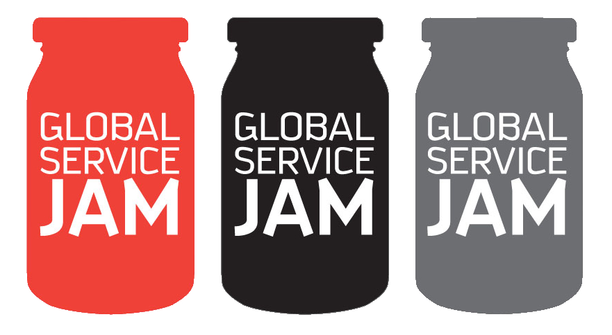
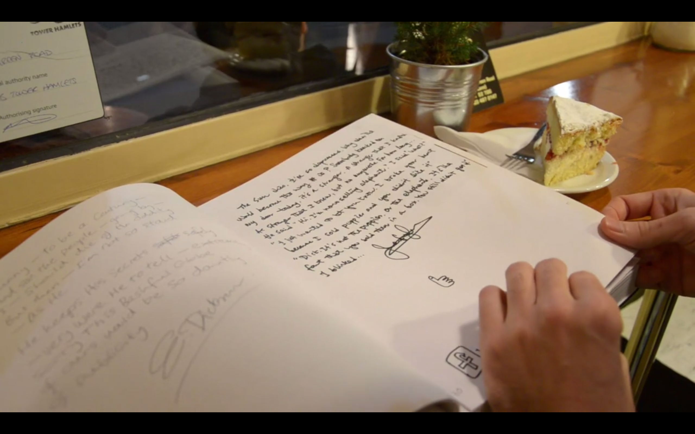

snapbook
2012, London. Service Design concept developed during GSDJ12.
Post-it, coffee.
Snapbook is an analog storytelling experience to discover the written experiences of others and share your own. Winner of the London Global Service Design Jam 2012
 